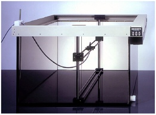

Multidata Systems's therapy planning software
Multidata Systems' Software is a maker of radiation therapy
Multidata Systems started in 1980 a therapy planning software in Panama City at National Cancer Institute to provide medical physics solutions for radiation oncology. This firm miscalculates the proper dosage of radiation for patients undergoing radiation therapy and involved in an accidental overexposure of radiation 28 patients. This accident happens because Multidata’s software allow a radiation therapist to draw on a computer screen the placement of metal shields called “blocks” designed to protect healthy tissue from the radiation. But the software will only allow technicians to use four shielding blocks, and the Panamanian doctors wish to us five. The doctors discover that they can trick the software by drawing all five blocks as a single large block with a hole in the middle. What the doctors din’t realise is that the Multidata software gives different answer in this configuration depending on how the hole is drawn: draw it in one direction and the correct dose is calculated, draw in another direction and the software recommends twice the necessary exposure. At least eight patients die, while another 20 receive overdoses likely to cause significant health problems. The physicians, who were legally required to double-check the computer’s calculations by hand, are indicted for murder. Finally, after a Through examination, it was founded that the software permitted incorrect forms of data entry which in turn had led to miscalculation of treatment times.
Solutions
Through inspections, the FDA learned that Multidata was designing, manufacturing, processing and distributing medical devices in violation of the decree. As a result, on March 3, 2016, the FDA sent a letter to Multidata ordering the firm to cease designing, manufacturing, processing, packing, repacking, labeling, installing, holding for sale and distributing any medical device. The company has now permanently ceased operations and will be dissolving. The FDA will keep the public informed if significant new information becomes available, Maisel said.